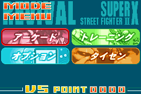

Super Street Fighter II X - Revival (Japan)
Stateless / Passcode 💾 MultiBoot 🎮 4P Link
Cartridge Identity
- Game Code
AXRJ(FamilyAXR)- Header Title
SSF2XREVIVAL- Maker / Revision
08/ rev0- ROM Size
- 8.0 MiB (8,388,608 B)
- Save Media
None / Unknown- SHA-256
c5b6b12649f68965a6e1fcfaf434bc06c73737051023682730362910f2a913e2
Screenshots


Link Cable & Multiplayer Communications
This title contains detected communication capabilities: 💾 MultiBoot 🎮 4P Link.
Detailed protocol specifications, SIO registers, Joybus commands, and MultiBoot sequences are documented in the Link & Multiplayer Reference.
- Multi-Player SIO (4P)
- 16-bit ring network · SIOCNT (
0x04000128) literals:0x0003e4,0x000454,0x000860· SIODATA32/SIOMULTI0 (0x04000120) literals:0x061ea8 - Single-Cart MultiBoot
- Single-Cartridge MultiBoot (Download Play) client/server handler · Thumb SWI 0x25 (
0xDF25):0x165b32,0x1a7e40,0x1c808c,0x28398c
Cartridge Storage Architecture: Stateless / Passcode
Zero non-volatile battery hardware: This cartridge PCB contains ROM only (no SRAM, Flash, or EEPROM chips). Progression is preserved via on-screen passcodes or session-only gameplay. No
.sav file is generated or required.
Text, Fonts & Scene Data
- Primary Text Encoding
- 16-bit / UTF-16LE text (
48ASCII strings) - Font & VWF Indicators
- VWF Width Table 1bpp Font · BIOS SWIs: BitUnPack
0x10:6· LZ770x11/12:15· Huffman0x13:17· RLE0x14/15:9 - Scene & Packaging
128ROM pointer tables (≥32 entries,37≥200) ·54relativeu32TOCs ·268OAM metasprite hits
Regional Variants & Revisions (Family AXR)
- Super Street Fighter II Turbo - Revival (Europe) (
AXRP, 8 MiB) - Super Street Fighter II Turbo - Revival (Europe) (Rev 1) (
AXRP, 8 MiB) - Super Street Fighter II Turbo - Revival (Europe) (Rev 1) (Virtual Console) (
AXRP, 8 MiB) - Super Street Fighter II Turbo - Revival (USA) (
AXRE, 8 MiB) - Super Street Fighter II Turbo - Revival (USA) (Virtual Console) (
AXRE, 8 MiB) - Super Street Fighter II X - Revival (Japan) (Virtual Console) (
AXRJ, 8 MiB)